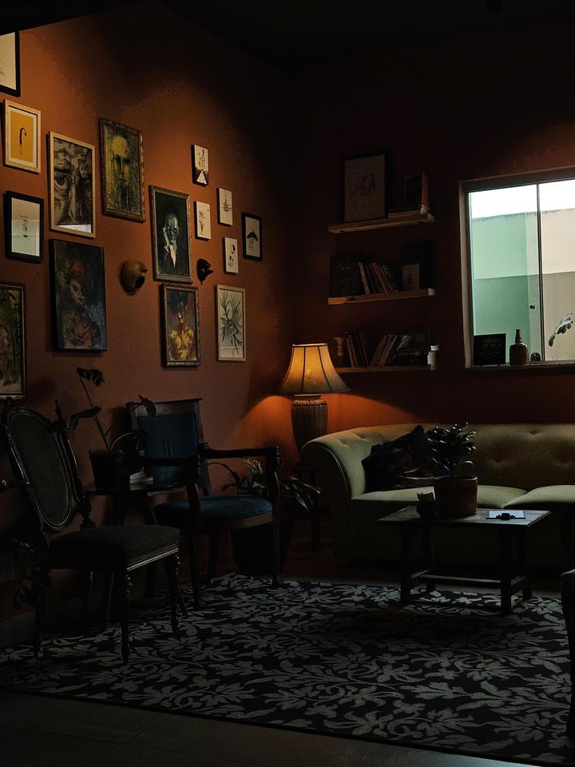
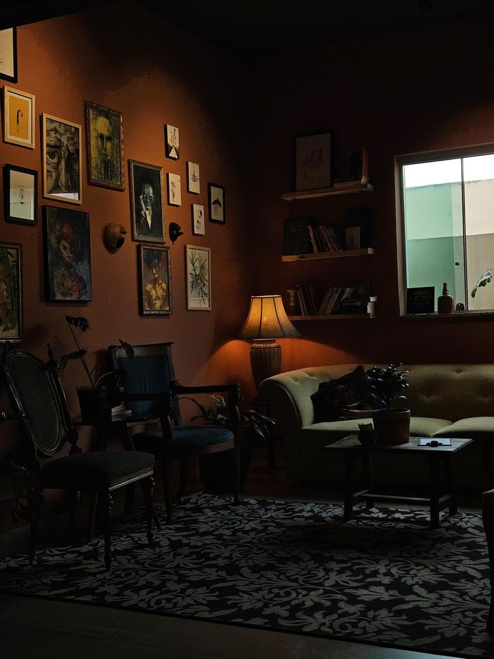

Mira Psicologia – Atendimentos clínicos e Consultorias
Mira - Em espanhol, "mira" é ação de ver, enxergar. Em português, vem de objetivo, de ter alvo, meta. Em mim, Mira Psicologia converte os significados do "ver com objetivo". Enquanto Psicóloga, busco enxergar completude em cada acolhimento psicológico que faço, seja de uma ação ou de uma pessoa. É sobre sempre ampliar, aumentar o campo de visão e entendimento até conseguir mirar. Assim, nasceu o Mira Psicologia - Atendimentos clínicos e consultorias.
Fale Comigo 

Abordagem Teórica —Histórico-Cultural
A Teoria Histórico-Cultural da Psicologia, desenvolvida por Lev Vygotsky, destaca a importância do contexto histórico, cultural e social na formação da mente humana. Essa abordagem enfatiza que o desenvolvimento psicológico é influenciado pelas interações sociais, culturais e históricas. Vygotsky defende que a aprendizagem é mais eficaz quando ocorre em colaboração com outros. Assim, a Histórico-Cultural proporciona uma compreensão mais profunda do comportamento humano, nos dando base para intervenções eficazes, auxiliando no desenvolvimento de habilidades sociais e culturais, o que promove a inclusão e diversidade. Foi a abordagem que escolhi para guiar minha prática profissional.
Milena Varges
CRP: 04/65065
Mirei a Psicologia em 2015, ainda no pré-vestibular. Naquela época, era fascinada pelas neurociências e queria me embrenhar nos estudos. Em 2016 entrei na Universidade Federal de Minas Gerais (UFMG) e, para minha surpresa, não me identifiquei em nada com os estudos neurocientíficos ali realizados. Senti que não conversava com a minha construção pessoal até ali. E, então, me permiti andar pelo curso e pela Universidade, vai que tinha outros alvos a mirar? Me empenhei nos estudos sobre Saúde Pública, me apaixonei pelo SUS, fiz iniciação científica... Coordenei Grupo de estudos, escrevi artigos sobre, estagiei na área... Fui até para a Antropologia, para tentar entender como um sistema é construído culturalmente.
Mas também tinha a área de Direitos Humanos, Cárcere, Psicologia do Trabalho, Migração, Psicologia Escolar, Psicologia e comunidades... aí não tinha como, fiz da área da Psicologia Social a minha ênfase. Os atendimentos individuais apareceram durante a Pandemia de Covid-19. Na emergência do caos coletivo, a crise individual começa.
E, então, fui para a Residência no Hospital Metropolitano Odilon Behrens. Queria me especializar em Saúde Coletiva, entender na raiz como o contexto altera e cria a Saúde Mental. E eu, que atendi adultos durante a Pandemia e conheci os frutos infantis advindos dela, também me descobri na Psicologia Infantil. Passei por tantos dispositivos, tantas histórias, escrevi sobre temas variados, foquei por diversas vezes em demandas específicas diferentes.
Hoje, atuo como Psicóloga do SUS, Psicóloga clínica individual e Consultora em Saúde. Descobri que meu mirar é no humano; em fases, demandas, neurodesenvolvimento e contextos diversos.
Te convido a mirar comigo!
Entre em ContatoServiços
Psicoterapia
Atendo individualmente e em grupos. Na modalidade virtual ou presencialmente em Vitória da Conquista (Bahia). Através da abordagem histórico-cultural, entendo que cada sujeito é formado por seu meio e todo o meio formados por sujeitos. A coletividade que nos forma, também nos individualiza. Adentrar no íntimo é sempre uma viagem profunda, entre em contato se quiser entender mais!
Atendimento Infantil
Realizo atendimentos infantis presencialmente em Vitória da Conquista. Seguindo as teorias de desenvolvimento de Vygotsky e estudos mais recentes, meu foco é a qualidade de vida dos nosso pequenos e a abertura de um universo que possibilite seu pleno desenvolvimento - em contato com a família, escola e outros setores que façam parte de sua contrução.
Me acompanha - Projeto para crianças
Visando um atendimento que contemple ainda mais o vasto mundo da construção infantil, desenvolvo um projeto de atendimentos que consiste em um acompanhamento personalizado e mais frequente. O “Me Acompanha” conta com Atendimentos Individuais, em Grupo, Domiciliar e Escolar. A intenção é conhecer e avançar com a criança em suas zonas de desenvolvimento. Entre em contato se faz sentido para você e para sua criança!
Orientações a mães e/ou responsáveis
Ofereço virtualmente orientações personalizadas a mães e/ou responsáveis que estejam enfrentando dificuldades de compreensão acerca do quadro de seus filhos e/ou que queiram traçar um papel atuante e bem baseado para a criação de seus filhos. Te envio mais informações e conversamos melhor se te interessou. Entre em Contato.
Palestras
Tendo passado profundamente por temas e estudos complexos da Psicologia, atualmente palestro sobre Saúde Pública e Coletiva; Psicologia e Direitos Humanos; Migração e Psicologia. Para mais informações e diálogos entre em contato.
Consultorias
Realizo um projeto de Educação Permanente sobre o Transtorno do Espectro Autista, dando base para serviços do SUS e particulares entenderem e melhorarem fluxos sobre o tema. Também realizo formações em Saúde Coletiva, História do SUS, Fluxos da Atenção Básica e temas relacionados. Entre em contato.
Planos de desenvolvimento de projetos de Saúde
A partir da Psicologia do Trabalho, desenvolvo intervenções sobre situações e ou serviços problemas na área da saúde, traçando um projeto de intervenção para lidar com o que se apresenta como situação-problema no âmbito público ou privado.
Ei, vamos bater um papo!
Se você deseja agendar uma consulta ou se ainda tem alguma dúvida sobre meus serviços, basta preencher o formulário a seguir com suas informações e mensagem, e entrarei em contato com você o mais breve possível. Você também pode me ligar ou enviar uma mensagem diretamente pelo WhatsApp, caso prefira!